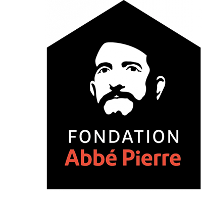
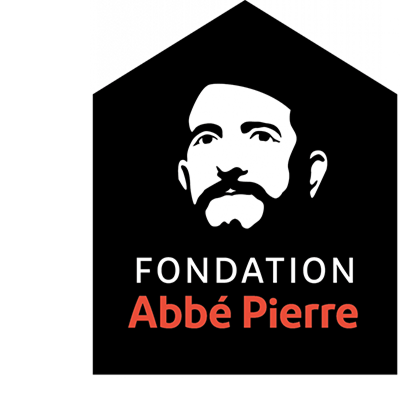

Tout a commencé à Pont-Saint-Esprit, dans le Gard, en octobre 1987, lors des premières rencontres Humanitaires Internationales organisées dans le cadre de l’Année mondiale des sans-abri à l’initiative de l’ONU. Placées sous le haut patronage de l’abbé Pierre, ces journées réunissent alors des parlementaires, des élus locaux, des responsables d’associations et des représentants de l’état, tous concernés par le problème du logement des personnes en difficulté.
La fondation Abbé-Pierre finance et accompagne des associations qui luttent contre le mal-logement et l'exclusion. Elle soutient près de neuf cents projets par an, en France et à l'étranger, intervenant principalement dans la construction de logements très sociaux, le combat contre l'habitat indigne, l'aide et l'accueil des personnes sans abri, le conseil et l'accompagnement juridiques des personnes mal logées, la sensibilisation de l'opinion et l'interpellation des pouvoirs publics. Elle est présente sur l'ensemble du territoire français via neuf agences régionales, trente Boutiques Solidarité et quarante Pensions de famille.
| Part des gains (en %) | |
| Missions sociales | 81 |
| Frais de recherche de fonds | 9 |
| Frais de fonctionnement | 10 |